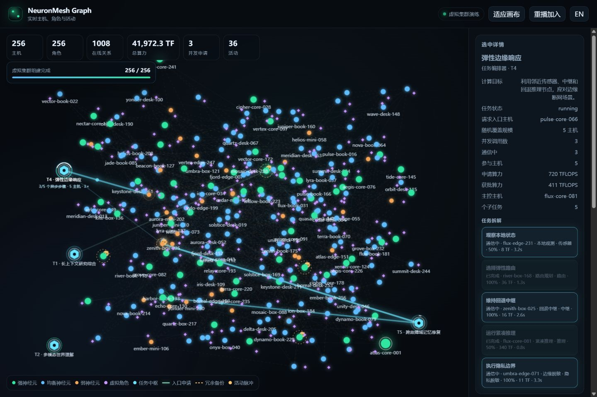

Entry-side planning
Any invited node can become an ingress. Model execution remains an explicit, auditable choice.
NeuronMesh connects heterogeneous computers, servers and edge devices into a capability-aware AI mesh. Requests can enter through any authorized node; virtual roles keep their encrypted memory across hosts; and disconnected nodes fall back to local autonomous inference.
Research prototype. It does not claim a production public-internet LLM swarm or physically permanent memory.
Research direction
Any invited node can become an ingress. Model execution remains an explicit, auditable choice.
Weak and strong neuron classes are derived from sustained performance, memory, thermal limits and network path quality.
AES-GCM content, blind lexical indexing, hot/warm/cold tiers and encrypted replicas across failure domains.
Role identity, namespace and adapters are separated from the physical host and can be transferred with a one-time secret.
Networked and offline-autonomous modes make the capability boundary explicit instead of failing silently.
Draining, capacity leases, replica acknowledgements and signed shutdown receipts make lifecycle operations measurable.
Architecture
Membership, discovery and planning, execution, durable state, learning and audit are separate planes. Any node may be an ingress, but no global scheduler owns all requests.
The v0.2.0 repository is a reference slice. The target contracts, state owners and implementation gaps are public.
Agent / OpenAI client
│
Any ingress ── local policy planner
│ │
encrypted memory signed peer capabilities
│ │
cross-domain replicas remote model providers
│
optional spatial adapter (WebXR / OpenXR future)Live relationship graph
The local /graph view uses an Obsidian-style force simulation.
Discovery, remote inference and encrypted-storage support create short-lived
animated pulses on the corresponding relationship line. A browser-generated
rehearsal defaults to 256 heterogeneous hosts with hardware, compute, Agent roles
and cross-domain redundancy. Up to three ingress hosts can request capacity
at the same time. Each decomposed plan randomly covers 1–40 hosts, then
asynchronously contacts a random 1–20 host batch with shared-host
allocations, automatically rebalanced capacity and per-host service
deadlines that finish at different times. Set demo=fleetN
to any supported size from 1 to 2048.

Search and research areas
Build it with us
No GPU is needed to begin. Run the deterministic demo, claim one scoped issue or bring a benchmark question in distributed transport, model serving, memory, trust or spatial interfaces. Every contribution type is eligible for public credit.